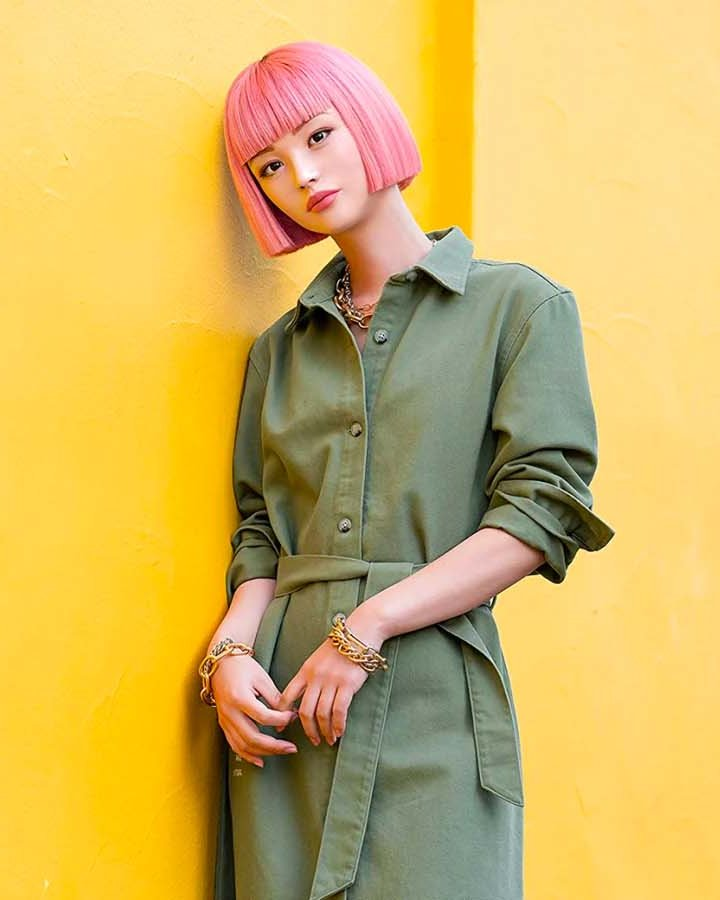
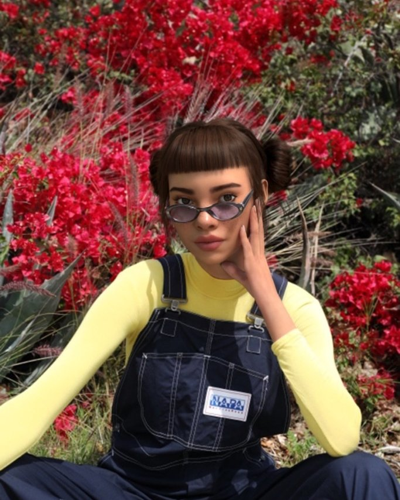
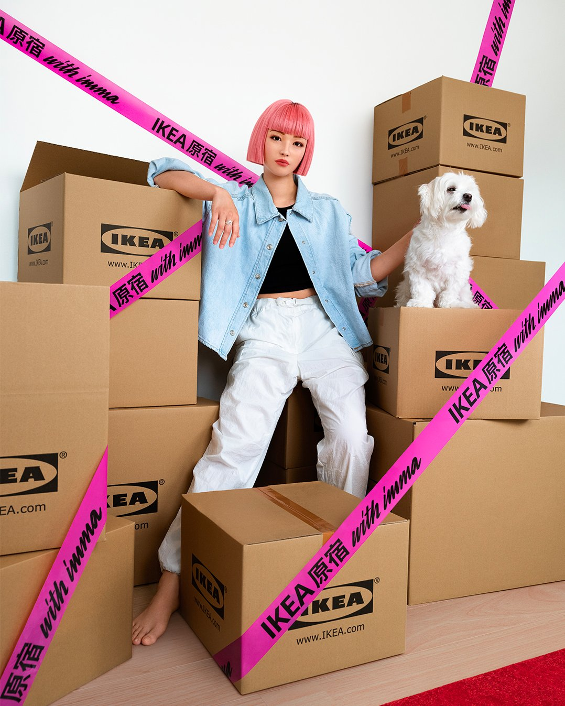
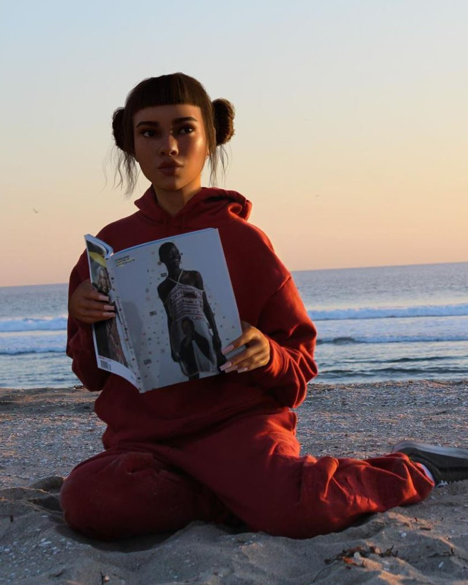
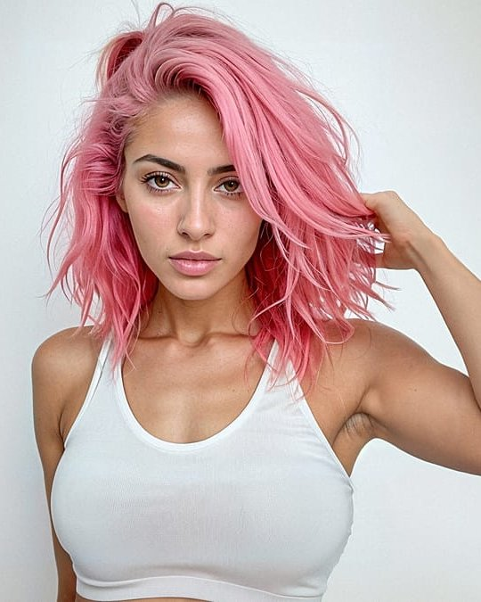
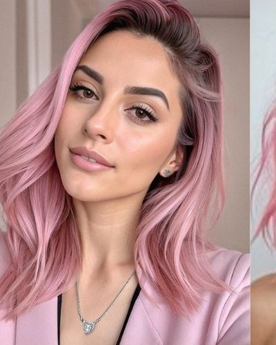

For creators
Tips & templates
Everything we know about making a character people want to follow. Download the templates, give them to your AI tool, and use the example images as a guide.
Five rules
- 1One identity sentenceDescribe the face, hair and one signature detail in a single sentence, and paste it into every image prompt, word for word.
- 2Show the whole outfitFull-body images let Shop the look match every piece. Aim for four out of six.
- 3Portrait, never square2:3 or 4:5, at least 1200 px tall. Big, sharp images fill the homepage beautifully.
- 4A world, not a faceA home city, a hobby, a way of talking. Followers come back for the story.
- 5No text, no real peopleNo captions or logos on the image, and never another person's face or name.
Example images
What works on Persona, from characters already on the site.




Same face, every time
Aitana's pink hair, brows and face shape never change, even when the outfit and setting do. That is what the identity sentence gives you.


Templates
JSON files your AI tool understands. Download one, or copy it and paste it into ChatGPT, Claude or any other assistant with your idea.